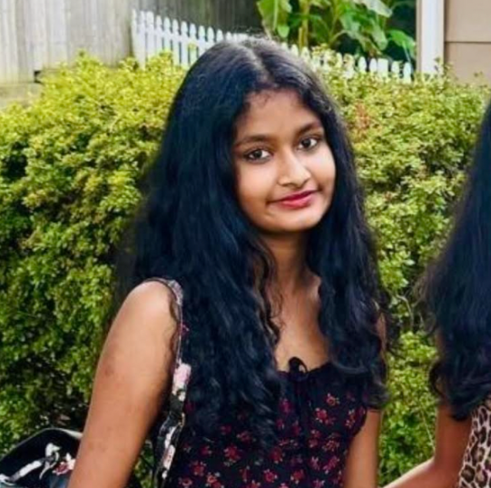

Kaarnika Prasanna
Falls Church High School, Falls Church, VA
Email: kaarnika.prasanna@gmail.com
Phone: (571)-999-3210
High school sophomore focused on data science, AI, neuroscience, and ethical technology. I'm passionate about using data to solve real-world problems and building fair, responsible AI systems.
Projects
Data Science + AI Case Study
What it is: A multi-course applied project completed through the Girls Who Code Data Science + AI Pathway.
What I did: Analyzed real-world datasets, built decision trees and introductory neural networks, evaluated model performance, and assessed potential bias in AI systems.
Technologies: Python, Replit, Google Slides/Docs
The Effect Of Microplastics on Seed Germination
What it is: Independent experimental research project — 2nd place at Falls Church High School Science Fair.
What I did: Designed controlled experiments to measure the impact of microplastic concentration on seed germination rates, collected and statistically analyzed experimental data, and presented results to judges.
Technologies: Google Sheets, Google Docs
Machine Learning Foundations
What it is: Collection of applied exercises completed through Intro to Machine Learning and Basic Neural Networks courses.
What I did: Implemented supervised learning models, explored training vs. testing differentiation, and constructed basic feedforward neural network models to understand model optimization.
Technologies: Python, Replit